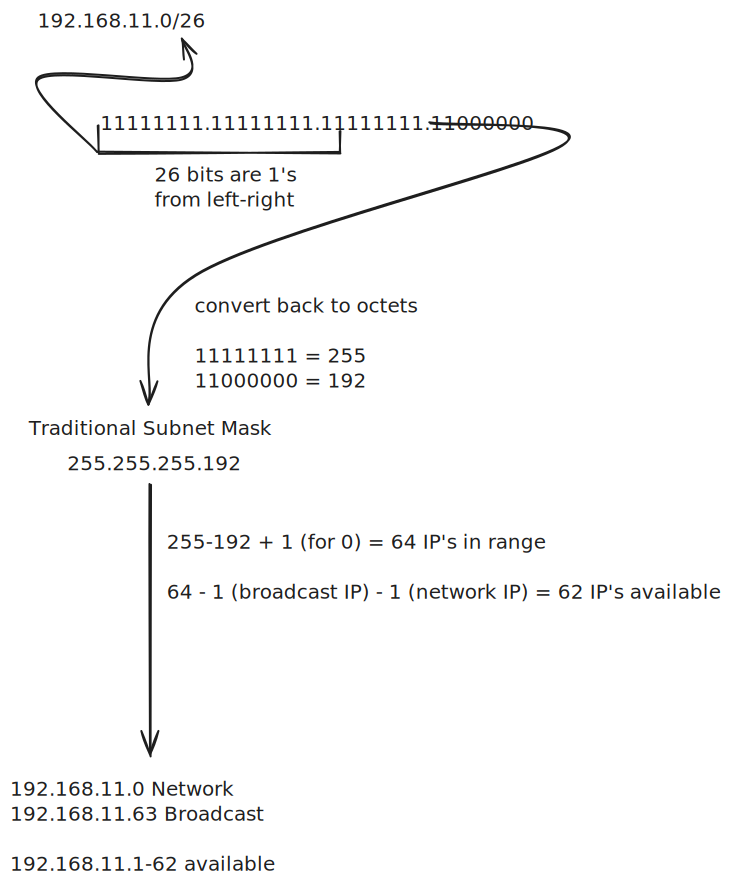
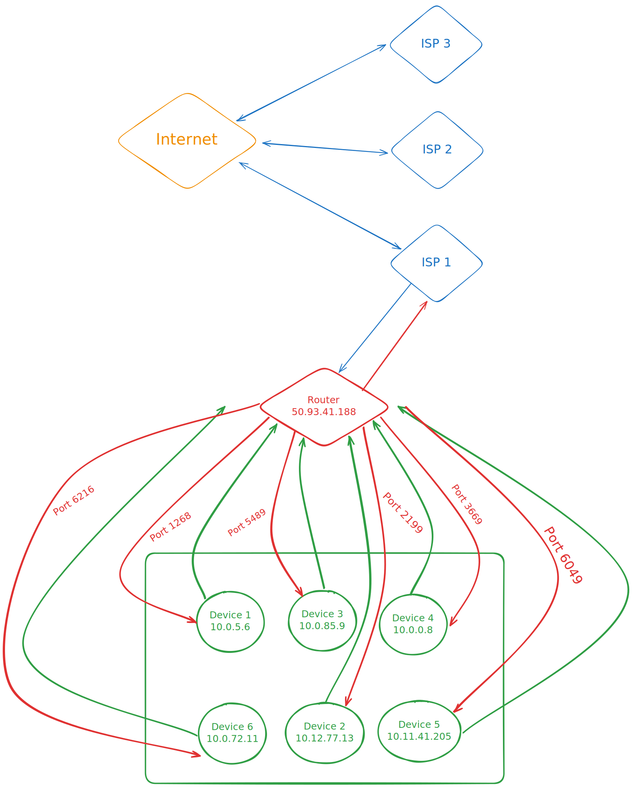
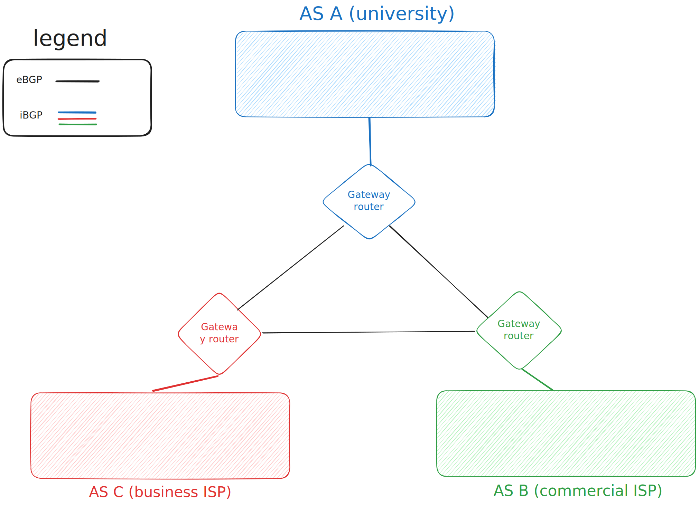

The network layer is primarily concerned with enabling different networks to be connected together. It does also handle some internal network functions (like the data layer), but primarily it’s focused on enabling multiple small networks to talk to one another.
The network layer is split into:
- Data layer
- How datagrams are forwarded in a network
- Control plane
- Determine route taken by packets from a source to a destination
- Routing
- BGP
- Routing
- Determine route taken by packets from a source to a destination
- SDN
- Can handle aspects of data layer and control plane
IP Addressing
IP addresses are used to identify devices in a network. IP’s work with port numbers to make it easy to send/receive traffic. For example, let’s say you want your phone to be able to access a web server you have on your network. First your server will bind to an IP address and port (typically IP is assigned by router using DHCP), let’s say for this example it’s 10.0.0.8 at port 80. Once your server is bound you can then access the server on your phone at http://10.0.0.8:80. This same principle, in conjunction with DNS is what allows you to access websites on the internet (like this one).
IPV4
IPV4 addresses are 32 bit numbers (split into 4 Octets). IPV4 is a very simple system, and is often used in internal networks. There is however an issue with IPV4, namely we’ve run out of IPV4 addresses on the internet (there’s ). Which is why we need NAT to make IPV4 useable, but even with NAT we’ve run out, and for external networking will likely need to start using IPV6 .
Octets
Each IPV4 address is split up into octets, and octet is a number between 0-255. So all IP addresses are 4 octets split up by .’s:
0.0.0.0 to 255.255.255.255
For example here are some addresses:
0.0.0.0
1.1.1.1
10.8.3.4
127.0.1.6
172.85.201.3
156.202.251.10
192.168.1.132
255.255.255.255
IPV6
IPV6 addresses are 128 bits long, meaning there are addresses (100 million times larger than the size of the universe in millimeters). It is meant to address the issues of limited numbers of IPV4.
Hexadecimal
IPV6 addresses use 8 hexadecimal numbers separated by colons. There are also lots of addresses that are shortened by the followning conventions:
- Remove leading 0’s (i.e.
0042becomes42) - If multiple secions of 0’s are in a row you can replace them with
::(i.e.1042:0000:0000:0000:2001becomes1042: : :2001[spaces added to make it easier to see]) For example:
1042:0000:0000:0000:2001:FF24:2121:0031 shortened to 1042::2001:ff24:2121:31
0000:0000:0000:0000:2001:FF24:2121:0031 shortened to ::2001:ff24:2121:31
0000:0000:0000:0000:0001:0004:0001:0031 shortened to ::1:4:1:31
0000:0000:0000:0000:0000:0000:0000:0001 shortened to ::1
Support
IPV6 requires changes to the packets that are sent across the network compared to IPV4, this means many services do not support IPV6.
Tunneling
Tunneling will allow you to encapsulate IPV6 datagrams inside an IPV4 datagram. The way this works is that IPV6 enabled routers need to be available at the first, and last stop. From there the datagram can transfer through as many IPV4 routers as necessary. Routers that support this are called dual-stack routers.
For example consider the following network where router’s A and C are dual stack (IPV6 based), and the rest are IPV4 only routers. A is trying to send an IPV6 packet to C:
flowchart TD
A[A <br>Dual stack] & B[B <br>IPV4] & C[C <br>Dual stack] & D[D <br>IPV4] & E[E <br>IPV4] & F[F <br>IPV4]
A --1: Sent as IPV4--> B --2: Sent as IPV4--> C --3: Unpacks IPV6 packet-->C
C --4: Response as IPV4 -->D --5: Sent as IPV4-->E --6: Sent as IPV4-->F --7: Sent as IPV4--> B --8: Sent as IPV4--> A --9: Unpack IPV6 --> A
In this case we assume in between step 3 and 4 there was an error with router B, so we were able to re-route to any other IPV4 system, which is very handy in disaster recovery situations.
DHCP
DHCP (Dynamic Host Configuration Protocol) is a system built into your router to assign devices IP addresses when they join a network for a given “lease time”. The pseudocode of what it does is something like:
listen{
if new device{
determine available IP on subnet
send message to device with "offer" to lease IP
wait for device response{
if device wants the IP{
lease IP address to device
}
}
}
}
refresh after set interval{
for device in devices{
if device is still connected{
re-lease IP to device for lease time
} else {
free IP associated with device
}
}
}
You can also allocate “static” IP’s, which use the MAC address of a device to state that they should always have a set IP. This can be useful if you want to have a server available at the same IP on a network (such as for a web server). DHCP works by assigning IP’s to the appropriate Subnets via Subnet Masking.
DHCP & DDNS
DNS systems allow people to look up IP addresses based on friendly names. However if those devices lose connection the DNS server can be pointing to the “wrong” IP. In simple networks you can just allocate a static IP for your server, and avoid this issue, however static IP’s are very expensive on the internet. Another option is to use a DDNS system. DDNS (dynamic DNS) is a system that allows your DNS records to be re-synced to updated IP addresses as they change.
Testing DHCP
You can see your DHCP server in action with a few commands (please note I’m not responsible for anything not working after you run these commands). You can monitor the traffic using something like wireshark by monitoring UDP port 67:
ipconfig /release # Releases your currently leased IP # Be careful doing this if your IP is statically configured
ipconfig /renew # Asks the DHCP server to renew your IP lease # If you’re currently connected it will be the same IP # If you’re not connected it will lease a new IP
sudo dhclient -r # Releases your currently leased IP # Be careful doing this if your IP is statically configured
sudo dhclient # Asks the DHCP server to renew your IP lease # If you’re currently connected it will be the same IP # If you’re not connected it will lease a new IP
If you run the commands you will get something like this in wireshark:
| source | destination | protocol | length | info | Description (added by me) |
|---|---|---|---|---|---|
| 0.0.0.0 | 255.555.255.255 | DHCP | 342 | DHCP Discover | Look for a DHCP server |
| 192.168.1.1 | 255.255.255.255 | DHCP | 590 | DHCP Offer | Get an offer for a new IP |
| 0.0.0.0 | 255.555.255.255 | DHCP | 354 | DHCP Request | Request the IP offered |
| 192.168.1.1 | 255.555.255.255 | DHCP | 590 | DHCP ACK | Acknowledgement of new IP from DHCP server |
Subnets
Subnets are used to break up IP addresses into blocks of IP’s that can be “rented” out to devices. This section focuses on IPV4 subnets specifically, though there are IPV6 variants which are more complicated.
Network & Broadcast IP’s
The network address is the first address in the subnet. It exists to identify the subnet.
The broadcast address is the largest possible IP in the subnet, similar to the “this” address (0.0.0.0), if you bind a socket to it, then it will be available to all other devices on the network. For example, let’s say you want to host a web server at your local school. The school has a subnet 10.xxx.xxx.xxx that DHCP rents. Your particular device is 10.0.0.4. On that device you start up a HTTP server, that has a socket bound to 0.0.0.0 at port 80. If another person on the same network goes to http://10.0.0.4:80 in their browser, they will get your server.
You can also use the Broadcast address to get the same effect. 0.0.0.0 is just an alias for it.
*Please note that some routers will also proxy anything on the “this” address to external networks. Check if this is the case before you accidentally broadcast something publicly you shouldn’t
Subnet Masking
In order to select a “block” of IP’s we use subnet masks. These are somewhat sophisticated bit masks that allow us to define which IP addresses should be available on each of these subnets. Let’s say for example that we have:
Starting IP: 192.168.1.0
Subnet Mask: 255.255.255.0
For each octet in the subnet mask:
If octet = 255 then the IP's for that octet are LOCKED
If > 255, then 255 - <octet value> octets are available
So when looking at 255.255.255.0, the first 3 octets are 255, meaning 192.168.1 is fixed for every IP address on this subnet. The last octet is 0, which means that 0-255 are in range for this subnet. From there every subnet automatically reserves the smallest and largest IP’s (in this case 192.168.1.0 and 192.168.1.255) for Network & Broadcast IP’s respectively. This means 192.168.1.1 to 192.168.1.254 are available to be assigned to devices.
This conversion is easier to understand as being an XOR operation over the subnet bits, so taking 192.168.1.0 with the subnet mask 255.255.255.0 again in binary, we get:
Subnet Mask: 11111111 11111111 11111111 00000000
XOR subnet: 00000000 00000000 00000000 11111111
Anything with a 1 in the XOR result is a bit that we can use to assign IP’s to. So for example with 192.168.1.0 with a mask of 255.255.128.0:
Subnet Mask: 11111111 11111111 11110000 00000000
XOR subnet: 00000000 00000000 00001111 11111111
The general formula for calculating number of IP addresses in a subnet is where x is the number of bit’s that are a 0 in the original submask. The 1’s in the original subnet would be considered the network bits, and the 0’s would be the host bits. This is because the network bits are reserved for the network, where the host bits are available for potential hosts on the network.
Taking another example:
Starting IP: 192.168.1.0
Subnet Mask: 255.255.128.0
Fixed Prefix: 192.168.xxx.xxx
Broadcast IP: 192.168.127.255
Network IP: 192.168.0.0
Usable: 192.168.0-127.0-255 (excluding network + broadcast values)
Available IP's: (2^15)-2 = 32,766
CIDR Notation
CIDR (classless inter-domain routing) is a notation that is often used when talking about IP addresses, and subnet masks. It is somewhat complicated to explain, so I have drawn out a calculation of how to convert CIDR to a traditional bitmask, and then perform calculations on that:

You can also shortcut the calculations by taking the number after the / and subtracting 32 from it, then raising it to a power of 2. For example:
192.168.1.0/26
x = 32-26 = 6
Number of IP's = (2^x)-2 = (2^6)-2 = (64)-2 = 62
Important IP addresses
There are many important IP addresses and ranges to be aware of, such as:
0.xxx.xxx.xxx: “This network” Often used to bind web servers to, in order for them to be accessible at the gateway IP1.1.1.1: Cloudflare DNS. Can be used to speed up your DNS8.8.8.8: Google DNS. Can be used to speed up your DNS10.xxx.xxx.xxx: Reserved private. Can be used for internal services172.16-31.xxx.xxx: Reserved private. Can be used for internal services192.168.xxx.xxx: Reserved private. Can be used for internal services
There are several others1, but these are the most relevant ones to be aware of when setting up servers internally in a network. Any of the IP’s in the range can be used to host your internal services, but be aware that 0.xxx.xxx.xxx will often make your services available to other devices on the network, and also depending on configs available to the general internet.
NAT
NAT (Network Address Translation) is a system used to help address the shortage of IPV4 addresses. Let’s say you have a router that is connected to an ISP. All devices connected to your router will talk to the internet using the same NAT IP, and receive responses via different port numbers, which will then map responses back to the correct IP addresses:

For example let’s say a packet for a GET request comes from device 1 (10.0.5.6), the IP is assigned a port number (i.e. 1268). The router then sends out a packet using a specified port number (i.e. 3333) to your ISP (which then goes out to the internet). When the responses come in they will come in at the same port number (1268), which is then sent back to your router, which then sends the message back to the device on that port. NAT will maintain an address translation table for example:
| WAN | LAN |
|---|---|
| 50.93.41.188, 3333 | 10.0.5.6, 1268 |
| 50.93.41.188, 2689 | 10.12.77.13, 2199 |
| 50.93.41.188, 4118 | 10.0.85.9, 5489 |
| 50.93.41.188, 5589 | 10.0.0.8, 3669 |
| 50.93.41.188, 6012 | 10.11.41.205, 6049 |
| 50.93.41.188, 3213 | 10.0.72.11, 6216 |
SDN
SDN (software defined networking) is a system that allows for you to define patterns, which allow you to match values in packet header fields, from there you can define actions based on these patterns (similar to a WAF [web application firewall]). It allows for simpler networks with more control given to the network controllers of a network. This allows you to do both control and Data plane activities with it.
Routing
There are two main approaches to structuring routing
- Per-router
- Each router on a network contributes to the routing algorithms, and maintains it’s own routing information to other devices in the network
- Centralized
- The routing between networks is centralized with SDN, and a control agent on each router forwards the packets to the network’s remote controller (on the network controller), which then routes it based on bandwidth availability, outages, network topology, etc.
Routing Algorithms
When looking at paths we generally are going to score based on a weighted sum of speed and congestion avoidance. In order to understand this section you should understand graphs, since they will be used heavily.
For the algorithms we will use:
G = (N, E) N = set of routers = {u, v, w, x, y, z} E = set of links = { (u,v), (u,x), (v,x), (v,w), (x,w), (x,y), (w,y), (w,z), (y,z)}
flowchart LR
u((u)) & v((v)) & w((w)) & x((x)) & y((y)) & z((z))
u o----o v
u o----o x
v o----o x
v o----o w
x o----o w
x o----o y
w <----> y
w o----o z
y o----o z
Each of these connections are actually a weighted graph, where the weight of each connection is it’s cost. For example in a perfectly fair network it would be:
flowchart LR
u((u)) & v((v)) & w((w)) & x((x)) & y((y)) & z((z))
u o--1--o v
u o--1--o x
v o--1--o x
v o--1--o w
x o--1--o w
x o--1--o y
w o--1--o y
w o--1--o z
y o--1--o z
There are a few classifications of algorithms:
- global vs decentralized:
- global
- all routers have complete topology, link cost info
- “link state” algorithms
- decentralized:
- router knows physically connected neighbors, link costs to neighbors
- iterative process of computation, exchange of info with neighbors
- “distance vector” algorithm
- global
- Static vs Dynamic
- static:
- routes change slowly over time
- dynamic:
- routes change more quickly
- periodic update
- in response to link cost change
- routes change more quickly
- static:
Dijkstra’s Algorithm
Dijkstra’s is a global and dynamic routing algorithm. You provide it a starting point and a destination, from there it can determine the cost to get to any other node, and specifically how to get to the destination node. This algorithm is close to what is used by the modern internet.
Pseudocode:
func currentCostToDestination(destination Node){
// current value of cost of path from source to destination
}
func getLinkCost(x,y){
// link cost from node x to y; = infinity if not direct neighbors
}
func predecessor(v Node){
// predecessor node along path from source to v
}
func dijkstras(source, dest){
known = {u} // The set of nodes whose least cost path definitively known
for v in nodes {
if v adjacent to u
then currentCostToDestination(v) = getLinkCost(u,v)
else currentCostToDestination(v) = infinity
}
for node in unknown_nodes{
find node not in known such that currentCostToDestination(node) is minimum
add node to known
for adjNode where (adjNode adjacent to node and not in known){
update currentCostToDestination(node){
// new cost to adjNode is either
// old cost to adjNode
// known shortest path cost to node plus cost from node to adjNode
currentCostToDestination(node) = min(
currentCostToDestination(adjNode),
currentCostToDestination(node) + getLinkCost(node,adjNode)
)
}
}
}
}
You can view a visualization here, which massively helps. Here is the same code but in python:
from typing import Dict, Tuple, Union
INFINITY = float('inf')
def get_link_cost(graph:Dict[str,Dict[str,int]], current_node:str, other_node:str) -> Union[int, float]:
"""Get the cost of going from the current_node, to the other_node in the graph
Parameters
----------
graph : Dict[str,Dict[str,int]]
The representation of the graph and it's edges + weights
current_node : str
The current node you're at
other_node : str
The node you want to check the cost to
Returns
-------
Union[int, INFINITY]
The cost of the link, or an infinity value if not adjacent
"""
return graph[current_node].get(other_node, INFINITY)
def dijkstra(graph:Dict[str,Dict[str,int]], start_node:str) -> Tuple[Dict[str, float],Dict[str, Union[int, None]]]:
"""Run dijkstra's algorithm to get the cost of a node in the graph
Parameters
----------
graph : Dict[str,Dict[str,int]]
The representation of the graph and it's edges + weights
start_node : str
The source node to start from (one of the keys of graph)
Returns
-------
Tuple[Dict[str, float], Dict[str, Union[int, None]]]
The current cost and the predecessors
"""
# Initialize helper data structures
current_cost = {node: INFINITY for node in graph}
predecessors = {node: None for node in graph}
known = set()
current_cost[start_node] = 0
print("Initial distances:", current_cost)
while len(known) < len(graph):
# Find the unknown node with the smallest current cost
min_cost_node = None
min_cost = INFINITY
for node in graph:
if node not in known and current_cost[node] < min_cost:
min_cost_node = node
min_cost = current_cost[node]
if min_cost_node is None:
break
# Add the node to known
known.add(min_cost_node)
print(f"\nKnown nodes: {known}")
# Update costs for neighbors
for neighbor in graph[min_cost_node]:
if neighbor not in known:
new_cost = current_cost[min_cost_node] + get_link_cost(graph, min_cost_node, neighbor)
if new_cost < current_cost[neighbor]:
current_cost[neighbor] = new_cost
predecessors[neighbor] = min_cost_node
print(f"Updated cost for {neighbor}: {new_cost}")
print("Current costs:", current_cost)
return current_cost, predecessors
if __name__ == "__main__":
# Example usage
graph = {
'u': {'v': 2, 'w': 5, 'x': 1},
'v': {'u': 2, 'x': 2, 'w': 3},
'w': {'v': 3, 'u': 5, 'x': 3, 'y': 1, 'z': 5},
'x': {'u': 1, 'v': 2, 'w': 3, 'y': 1},
'y': {'x': 1, 'w': 1, 'z': 2},
'z': {'y': 2, 'w': 5},
}
# Precomputing the shortest path to every node
distances = dict()
for node in graph:
d , _ = dijkstra(graph, node)
distances[node] = d
from pprint import pprint
print("Distances:\n")
pprint(distances)
print(f"If I want to go from u to z it will take {distances['u']['z']}")Bellman-Ford Equation (TODO)
Also called a distance vector algorithm. This is a decentralized algorithm, and quite hard to understand because of this. Each node has it’s own state that it maintains, and broadcast changes to other nodes, which then may broadcast their own changes as they are calculated. Additionally because it gets better with iterations, each node can be in different states of the algorithm than other nodes.
It uses a recursive relation to determine the cost of paths:
min = Minimum taken over all neighbors v of x c(x,y): cost to neighbor v : cost from neighbor v to destination y
Takes at most (n umber of edges - 1) iterations. At each iteration you start from an estimate, and approach the “true” values as you go. If you hit an iteration where no values change, you can stop iterating. In general at each node (representing a router) you wait for a change, recompute estimates, and broadcast updates (only if you have any).
This algorithm has a few other issues:
- Each node can advertise incorrect path cost
- Errors propagate through the network causing network black holes
Hierarchy & Autonomous Systems
Autonomous systems are essentially large networks. These large networks (such as ISP’s, or multinational companies like google), are the backbone of the internet. Because of the scale of individual systems, and the totality of them, traditional routing algorithms can cause issues. As such we use a Hierarchical structure to the internet to mitigate the issues of scale.
The way this works is we have different systems inside an autonomous system (intra-AS routing) vs between autonomous systems (inter-AS routing). Intra-AS routing only requires that devices within the AS use the same protocol, however the gateway router must use the defined inter-AS routing that the next node in the hierarchy requires. Consider this example. We have 3 AS’s:
A. is a university, inside the university there are many access points, which all use dijkstra’s for intra-AS routing B. An ISP that has tons of “neighborhood” routers, which uses a distributed Bellman-Ford for intra-AS routing C. Another business specific ISP that has it’s own various “groups” of networks with their own algorithms, which conglomerate into the single business specific ISP before going out to the internet

The gateway routers are what speak to other AS’s (for simplicity I assume 1 gateway router, in reality there can be several per-AS).
Inter-AS routing (BGP)
The goal of inter-AS routing is t:
- Forward packets to the internet, and receive and route them back to where they belong on the network
- The router much determine which other AS’s are available to it, and propagate that info to other routers within the AS
To achieve this AS’s use BGP (border gateway protocol). BGP has 2 primary services that it provides to AS’s:
- Subnet reachability
- eBGP: Obtain subnet information (reachability)
- Runs outside AS
- Allows gateway routers of each AS to talk to one another
- iBGP: Protocol to help propagate information to all devices within AS
- Runs inside AS
- Helps maps internal subnets to the gateway protocol
- eBGP: Obtain subnet information (reachability)
- Allows subnets to advertise themselves
These two pieces of information help understand what paths are possible, it has no particular information about path cost. That is all handled internally by the policies set on the autonomous system a device resides within. In the diagram in the previous section, the white lines are eBGP, and the colored lines are iBGP. BGP routers communicate over eBGP using TCP connections.
Intra-AS routing
The algorithms used for communication inside AS’s (between other routers & devices) are:
- RIP (routing information protocol)
- Distance vector-based
- IGRP (Interior Gateway Routing Protocol)
- Cisco proprietary (deprecated as of 2016)
- OSPF (Open Shortest Path First)
- IS-IS is a variant of it
- Routing uses Dijkstra’s variant
- Most popular these days
- Link state
- Has a topology map at each node, that indicates shape of rest of network
- Each router floods the network, meaning it sends it’s network information over IP datagrams to the entire rest of the network
ICMP
ICMP (internet control message protocol) is a system used by hosts and routers to determine information about a network. It defines a basic message structure that devices can send to indicate information. It does this using a type and a code.
| Type | Code | Description |
|---|---|---|
| 0 | 0 | echo reply (ping) |
| 3 | 0 | dest. network unreachable |
| 3 | 1 | dest. host unreachable |
| 3 | 2 | dest. protocol unreachable |
| 3 | 3 | dest. port unreachable |
| 3 | 6 | dest. network unknown |
| 3 | 7 | dest. host unknown |
| 4 | 0 | source quench (congestion control - not used) |
| 8 | 0 | echo request (ping) |
| 9 | 0 | route advertisement |
| 10 | 0 | router discovery |
| 11 | 0 | TTL expired |
| 12 | 0 | bad IP header |
Most of the commands used in commands like ipconfig/ifconfig |
Additional Resources
- What is the network layer? | Network vs. Internet layer | Cloudflare
- IGMP
- Subnet Masks
- DDNS
- IPV6
- SDN
- Routing